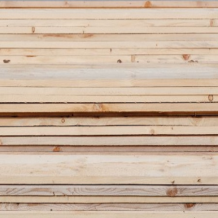

G.J.S. Galiński
Deski szalunkowe


W naszej ofercie znajduje się m.in. tarcica budowlana, potocznie zwaną deską szalunkową. Jest to deska obrzynana, szorstka, sosnowa lub świerkowa o grubości 24mm (1 cal) i o długości ponad 2,4m. Jest to najprostszy i najpopularniejszy produkt każdego tartaku. Deska ta ma wiele zastosowań.
Wykorzystuje się ją m.in. do:
- szalunków,
- pokrycia dachów,
- palet,
- opakowań,
- i wielu innych.
Cena
impregnowana - 640 zł za m3 23% VAT
nieimpregonwana - 570 zł za m3 23% VAT